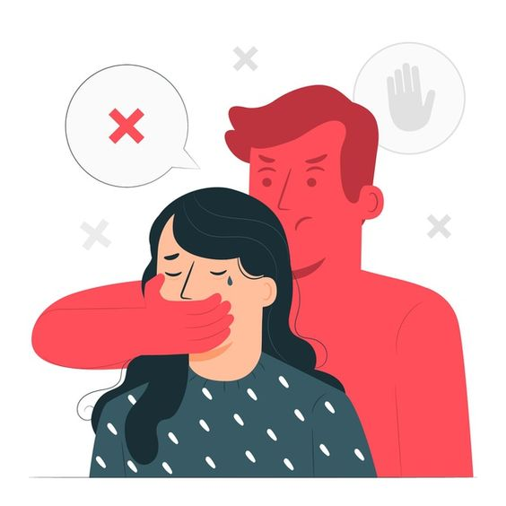

|  |
การล่วงละเมิดทางเพศ (Sexual Harassment) คืออะไร?
การคุกคามทางเพศ หรือการล่วงละเมิดทางเพศ คือ การกระทำ/พฤติกรรมที่มีเจตนาไม่ดี แสดงออกถึงนัยยะทางเพศต่อเพศตรงข้าม หรือเพศเดียวกัน โดยไม่ได้รับการยินยอมจากอีกฝ่าย ทำให้ผู้ถูกกระทำรู้สึกไม่ดี ไม่ปลอดภัย หรือถูกลดทอนศักดิ์ศรีคุณค่าความเป็นมนุษย์ ซึ่งการกระทำดังกล่าวหมายรวมถึงรูปแบบต่างๆ ดังนี้
1. การสัมผัสทางกาย (Physical Conduct) คือ การใช้อวัยวะสัมผัสถูกร่างกายของอีกฝ่ายโดยไม่ได้รับอนุญาต หรือบังคับให้ผู้อื่นสัมผัสร่างกายตนเอง เช่น การโอบกอด แตะเนื้อต้องตัว ลูบไล้ เป็นต้น
2. การแสดงออกทางวาจา (Verbal Conduct) คือ การใช้คำพูดล่วงเกิน ล้อเลียน พูดถึงสัดส่วนร่างกาย รวมถึงมุกตลกเรื่องเพศที่ทำให้ผู้ถูกกล่าวถึงรู้สึกแย่ ไม่ปลอดภัย
3. การแสดงออกทางกริยาท่าทาง สายตา (Visual Conduct) คือ การใช้กริยา ท่าทาง หรือสายตา แสดงออกถึงความรู้สึกทางเพศที่ทำให้ผู้ถูกกระทำรู้สึกหวาดกลัว ขยะแขยง เช่น การใช้สายตาจ้องมองแทะโลม การทำมือสื่อถึงท่าทางเพศ เป็นต้น
4. การส่งข้อความอนาจาร (Written Conduct) คือ ข้อความที่ผ่านการเขียน หรือพิมพ์ ในเชิงส่อไปทางเพศ ไม่ว่าจะเป็นการส่งส่วนตัว ผ่านสื่อออนไลน์ รวมถึงการส่งรูปภาพอนาจารให้แก่ผู้อื่น
ผลกระทบจากการถูกล่วงละเมิดทางเพศ
ผลกระทบจากการถูกล่วงละเมิดมีผลข้างเคียงทั้งในระยะสั้นและระยะยาว โดยเฉพาะอย่างยิ่งหากการละเมิดนั้นเกิดขึ้นในวัยเด็ก แม้ในตอนที่ถูกกระทำ เด็กอาจจะยังไม่เข้าใจว่าการถูกละเมิดเป็นอย่างไร แต่พวกเขาจะจดจำความรู้สึกนั้นกระทั่งเติบโตขึ้น และเริ่มเข้าใจว่าเหตุการณ์ที่เกิดขึ้นกับตนเองนั้นคือ การถูกล่วงละเมิดทางเพศ ซึ่งก่อให้เกิดบาดแผลในใจตามมา
1. ผลทางร่างกาย (Physical Effects) อาการบอบช้ำทั้งการถูกกระทำที่รุนแรง รวมถึงสภาพร่างกายที่ย่ำแย่จากภาวะความเครียด
2. ผลทางจิตใจ (Emotional / Mental Health Effects) ผลกระทบทางจิตใจจะก่อให้เกิดปัญหาในระยะยาว ทั้งภาวะความเครียด ความหวาดกลัว หวาดระแวง ความรู้สึกด้อยค่าในตนเอง ซึ่งอาจนำไปสู่อาการป่วยทางจิตเวช เช่น โรคซึมเศร้า โรควิตกกังวล (PTSD) เป็นต้น